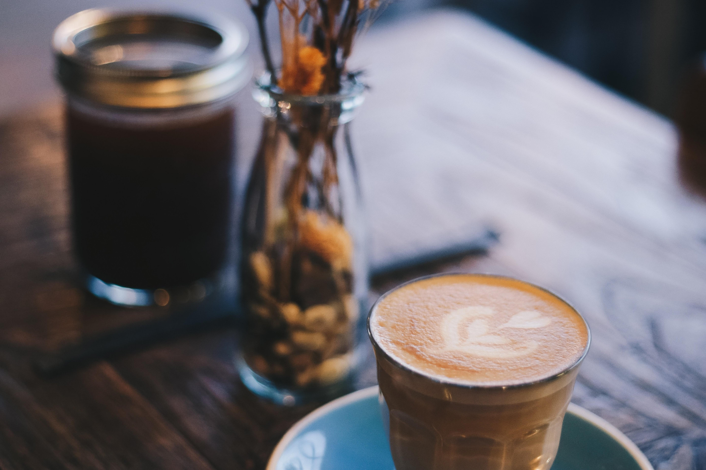

Kopi Tubruk Signature
Rasa klasik dengan aroma kuat untuk teman memulai hari.
Rp45.000
UMKM Pekalongan

Kopi lokal pilihan untuk teman belajar, bekerja, dan berdiskusi.
Rasa klasik dengan aroma kuat untuk teman memulai hari.
Rp45.000

Minuman kopi dingin dengan manis aren yang seimbang.
Rp22.000